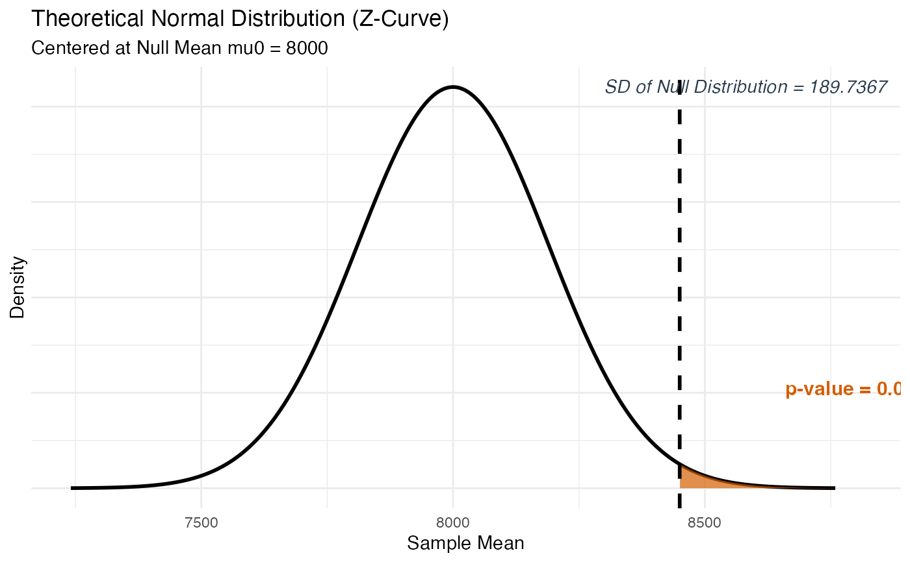
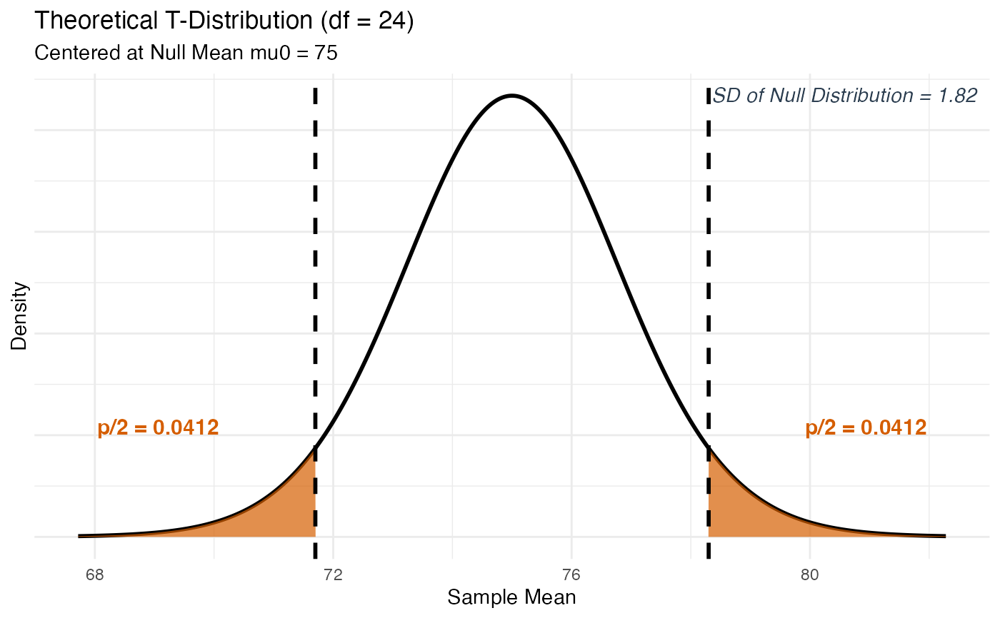
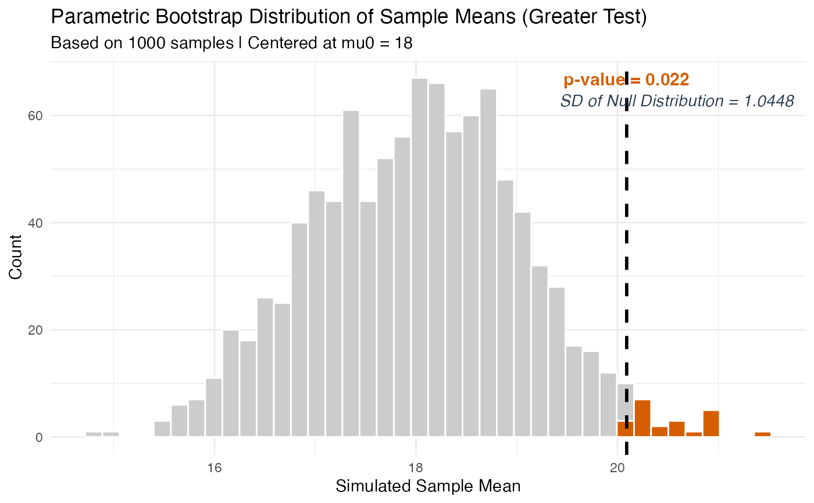
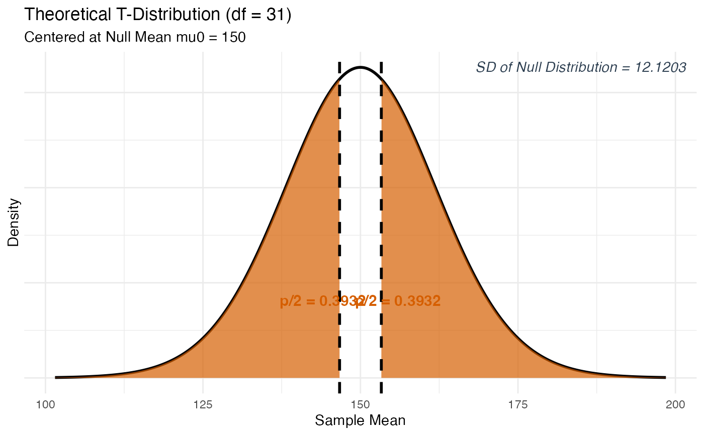

Tests a claim about a single population mean (\(\mu\)) using either a simulation-based approach (Parametric Bootstrap) or a theory-based Z-test or T-test, depending on what is known about the population standard deviation.
This function accepts input in two ways:
Summary Statistics: You already know the sample mean, sample size, and standard deviation (common in textbook homework problems where the data is summarized for you). Pass
x_bar,n, andsd_valdirectly.Raw Data: You have an actual dataset loaded into R (common in activities and projects). Pass
formulaanddatainstead, and the function will compute the mean, sample size, and standard deviation for you automatically.
Usage
test_1mean(
x_bar = NULL,
n = NULL,
sd_val = NULL,
sd_type = "sample",
formula = NULL,
data = NULL,
null_mu = 0,
alternative = "two.sided",
method = "theory",
sim_reps = 1000
)Arguments
- x_bar
The observed sample mean – the average value calculated from your sample. For example, if the average resting heart rate of 30 students was 72.4 beats per minute,
x_bar = 72.4. Only used when NOT providingformulaanddata.- n
A whole number representing the total sample size (how many observations were collected). For example, if you measured 30 students,
n = 30. Only used when NOT providingformulaanddata.- sd_val
The standard deviation of the variable. Whether this is the population standard deviation (\(\sigma\)) or the sample standard deviation (s) is determined by the
sd_typeargument. Only used when NOT providingformulaanddata.- sd_type
A character string telling the function whether the standard deviation you provided is from the population or the sample. Must be one of:
"sample"(default) The standard deviation was calculated from your sample data (this is the most common case in practice). When this is chosen and
method = "theory", a T-test is used because the true population spread is unknown."population"The true population standard deviation (\(\sigma\)) is known – this is rare in real life but sometimes given in textbook problems. When chosen and
method = "theory", a Z-test is used.
- formula
A one-sided formula of the form
~ variablethat identifies the numeric variable in your dataset to analyze. For example,formula = ~ HeartRatewhereHeartRateis a column in your data frame. Only used when NOT providingx_bar,n, andsd_val.- data
A data frame (loaded from a
.csv,.txt, or.xlsxfile) that contains the variable named informula. Only used when NOT providingx_bar,n, andsd_val.- null_mu
The hypothesized population mean under the null hypothesis (H\(_0\)). This is the value you are testing your sample against. For example, if you are testing whether the average height is different from 65 inches,
null_mu = 65. Default is0.- alternative
The direction of the alternative hypothesis (H\(_a\)). Must be one of:
"two.sided"H\(_a\): \(\mu \neq\)
null_mu(default) – use when testing if the mean is different from the null in either direction."greater"H\(_a\): \(\mu >\)
null_mu– use when testing if the mean is greater than the null."less"H\(_a\): \(\mu <\)
null_mu– use when testing if the mean is less than the null.
- method
The method used to calculate the p-value. Must be one of:
"theory"(default) Uses the traditional Z-test (if
sd_type = "population") or T-test (ifsd_type = "sample"). Appropriate when validity conditions are met: the sample size is at least 20, or the underlying population is known to be roughly symmetric."simulation"Uses a Parametric Bootstrap simulation. A hypothetical population centered at
null_muis created and repeated samples are drawn to build the null distribution. This method is more flexible and does not rely on distributional assumptions.
- sim_reps
The number of bootstrap samples to draw when
method = "simulation". More repetitions give a more stable p-value estimate. Default is1000. Increasing to5000or10000is reasonable for final analyses.
Value
An S3 object of class stat218_1mean containing all computed
values. You can use the following methods on the result:
print(result)Displays a clean summary of the test including the observed mean, null hypothesis, SD of the null distribution, test statistic, and p-value.
plot(result)Plots the null distribution with shaded p-value region(s), p-value annotation on the shaded area(s), and the SD of the Null Distribution labeled on the plot.
plot_steps(result)Displays a detailed three-panel step-by-step interpretation with proper fraction notation – great for checking your work or studying before an exam.
Details
The Core Idea
In a one-sample mean test, we are asking: "Is the average value we observed in our sample consistent with some claimed population mean, or is it too far away to be explained by random chance alone?"
The null hypothesis always takes the form H\(_0\): \(\mu =\) null_mu,
where \(\mu\) (Greek letter "mu") represents the true, unknown
population mean.
Z-Test vs. T-Test (Theory Method)
When method = "theory", the choice between Z and T depends entirely on
what you know about the population:
If the true population standard deviation (\(\sigma\)) is known (
sd_type = "population"), use the Z-test.If only the sample standard deviation (s) is available (
sd_type = "sample"), use the T-test. This is the most common real-world situation. The degrees of freedom are handled automatically in the background.
Simulation Method (Parametric Bootstrap)
We simulate what the world would look like if the null hypothesis were
true by repeatedly drawing samples of size n from a Normal distribution
centered at null_mu with standard deviation sd_val. The SD of that
simulated null distribution goes in the denominator of the test statistic.
The p-value is the proportion of simulated sample means as extreme as or
more extreme than our observed \(\bar{x}\).
Validity Conditions for Theory Method
The theory-based test is most reliable when:
Sample size \(n \geq 20\) (Central Limit Theorem kicks in), or
The underlying distribution of the variable is known to be roughly symmetric even for smaller samples.
A warning will be issued automatically if n < 20 and
method = "theory".
Examples
# --- Summary Statistics Path (one-sided, theory Z-test) ---
# Testing whether the average daily step count exceeds 8000.
# A fitness study reported: x-bar = 8450, n = 40, sigma = 1200 (known).
result <- test_1mean(x_bar = 8450, n = 40, sd_val = 1200,
sd_type = "population", null_mu = 8000,
alternative = "greater", method = "theory")
print(result)
#>
#> ── 1-Sample Mean Hypothesis Test (Theory) ──────────────────────────────────────
#> ℹ Observed Mean (x-bar): 8450
#> ℹ Standard Deviation (sigma): 1200 | n: 40
#> ℹ Null Hypothesis (mu0): 8000
#> ℹ Alternative: greater
#> • SD of Null Distribution: 189.7367
#> • Test Statistic (Z): 2.372
#> • P-Value: 0.0089
plot(result)

if (FALSE) { # \dontrun{
plot_steps(result)
} # }
# --- Summary Statistics Path (two-sided, theory T-test) ---
# Testing whether the average exam score differs from 75.
# Sample: x-bar = 78.3, n = 25, s = 9.1 (sample SD).
result2 <- test_1mean(x_bar = 78.3, n = 25, sd_val = 9.1,
sd_type = "sample", null_mu = 75,
alternative = "two.sided", method = "theory")
print(result2)
#>
#> ── 1-Sample Mean Hypothesis Test (Theory) ──────────────────────────────────────
#> ℹ Observed Mean (x-bar): 78.3
#> ℹ Standard Deviation (s): 9.1 | n: 25
#> ℹ Null Hypothesis (mu0): 75
#> ℹ Alternative: two.sided
#> • SD of Null Distribution: 1.82
#> • Test Statistic (T): 1.813
#> • P-Value: 0.0823
plot(result2)

if (FALSE) { # \dontrun{
plot_steps(result2)
} # }
# --- Raw Data Path (one-sided, simulation) ---
# Using mtcars: testing whether the average MPG exceeds 18.
result3 <- test_1mean(formula = ~ mpg, data = mtcars,
null_mu = 18, alternative = "greater",
method = "simulation")
#> ✔ Data extracted from variable "mpg":
#> • Sample Mean (x-bar): 20.0906
#> • Sample SD (s): 6.0269
#> • Sample Size (n): 32
#> ℹ `sd_type` automatically set to "sample" from raw data.
print(result3)
#>
#> ── 1-Sample Mean Hypothesis Test (Simulation) ──────────────────────────────────
#> ℹ Observed Mean (x-bar): 20.0906
#> ℹ Standard Deviation (s): 6.0269 | n: 32
#> ℹ Null Hypothesis (mu0): 18
#> ℹ Alternative: greater
#> • SD of Null Distribution: 1.0448
#> • Test Statistic (Z_sim): 2.001
#> • P-Value: 0.022
plot(result3)

if (FALSE) { # \dontrun{
plot_steps(result3)
} # }
# --- Raw Data Path (two-sided, theory T-test) ---
# Using mtcars: testing whether average horsepower differs from 150.
result4 <- test_1mean(formula = ~ hp, data = mtcars,
null_mu = 150, alternative = "two.sided",
method = "theory")
#> ✔ Data extracted from variable "hp":
#> • Sample Mean (x-bar): 146.6875
#> • Sample SD (s): 68.5629
#> • Sample Size (n): 32
#> ℹ `sd_type` automatically set to "sample" from raw data.
print(result4)
#>
#> ── 1-Sample Mean Hypothesis Test (Theory) ──────────────────────────────────────
#> ℹ Observed Mean (x-bar): 146.6875
#> ℹ Standard Deviation (s): 68.5629 | n: 32
#> ℹ Null Hypothesis (mu0): 150
#> ℹ Alternative: two.sided
#> • SD of Null Distribution: 12.1203
#> • Test Statistic (T): -0.273
#> • P-Value: 0.7864
plot(result4)

if (FALSE) { # \dontrun{
plot_steps(result4)
} # }